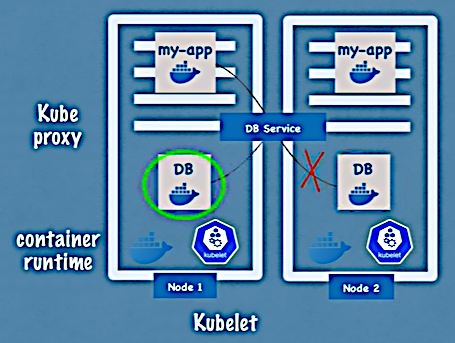

Theory
Theory
Theory
Jun 29, 2021
Wikipedia: Kubernetes.
Kubernetes home page: https://kubernetes.io/.
Kubernetes documentation: https://kubernetes.io/docs/home/.
Kubernetes or K8s — is an open-source container-orchestration system for automating computer application deployment, scaling, and management. It was originally designed by Google and is now maintained by the Cloud Native Computing Foundation.
Kubernetes license: Apache License 2.0.
High availability — low or no downtime.
Scalability or high performance.
Disaster recovery — backup and restore.
Documentation section: Kubernetes Components.
Node is a physical or virtual machine.
Pod — the smallest unit of K8s. Abstraction over container. K8s works not only with Docker containers. As users we interact only with the Kubernetes layer. Each Pod has its own IP address.
Pods as components are ephemeral, which means they can die very easily. In this case a new Pod with a new IP address is created that is very inconvenient. So Services come to the scene.
Service — an IP address that can be attached to a Pod. If the Pod dies the service and the IP address will stay. There may be external services that are open for external communication and internal ones (like database services). A service is an (HTTP) IP address and a port. But for an end product we would want HTTPS and a domain name. In this course, there's a separate section devoted to Services.
Ingress accepts external requests and forwards it to the Services.
Jul 1, 2021
We have a Pod my-app that communicates with a database (say mongo-db) and its endpoint name
changes to e.g. mongo-db-1. If the endpoint name is configured in the application property file
(inside the built image) then we have to do a lot of tedious work to rebuild and redeploy the
application my-app. Too much for such a small change.
ConfigMap keeps parameters that the applications may access (via e.g. environment variables or property files). Secret mechanism (not activated by default) keeps secret data (in Base64 format).
Jul 2, 2021
When a database Pod stops, the data is gone. Volumes are K8s components that attach physical storage to Pods. The storage may be local (inside the K8s node), remote or cloud (outside the K8s node).
K8s doesn't explicitly manage the data persistence. The user or the administrator must be responsible for the storage setup, backup, etc.
To avoid downtime we would want to use principle "replicate everything". So we create replica Nodes in which corresponding Pods are connected to the same Services. The Services in this case have also a function of load balancing.
To create a replica of a Pod we don't create a separate instance of the Pod. Instead we define a blueprint for the Pod and specify how many replicas we want to run. And this blueprint is another K8s component called Deployment. Deployment is abstraction of Pod.
But we cannot replicate a database using a Deployment because databases are stateful. In this case we use another K8s component called StatefulSet. So
| Deployment | StatefulSet |
|---|---|
| for stateless applications | for stateful applications (or databases) |
Note. Deploying StatefulSets is not an easy task. So DBs are often hosted and managed outside of a K8s cluster.
There are much more other components but these are the main ones.
The main topics to be discussed:

A worker service or worker Node is a Node that fulfills the user's tasks. Three processes must be installed on every such Node:
Usually K8s Cluster consists of multiple Nodes. How to:
All this tasks are done by Master Nodes (or Master services).
Four completely different processes run on every Master Node:
K8s Clusters usually have multiple Master Nodes each having their own Master processes. In this case:
Let's say we will have 2 Master Nodes and 3 Worker Nodes.
Note
Master Nodes are more important but they have less load of work and consume less resources.
General algorithm of adding a new Master/Worker Node: